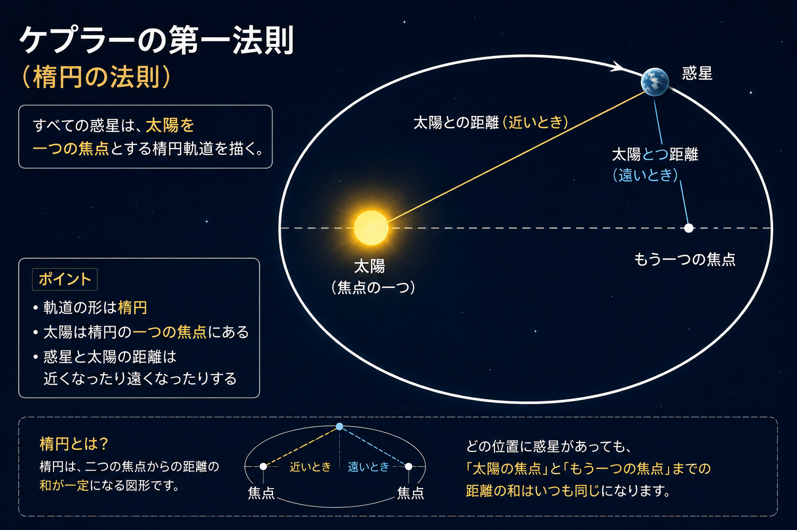
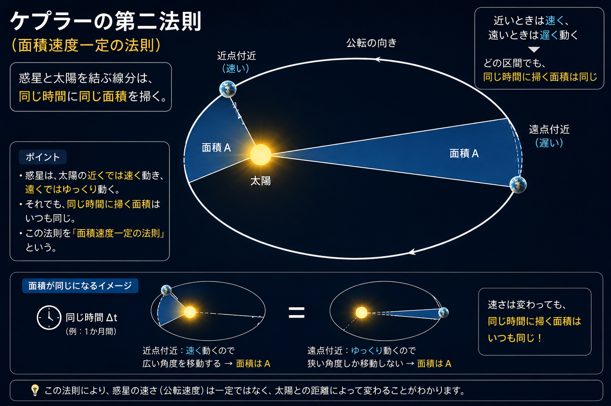
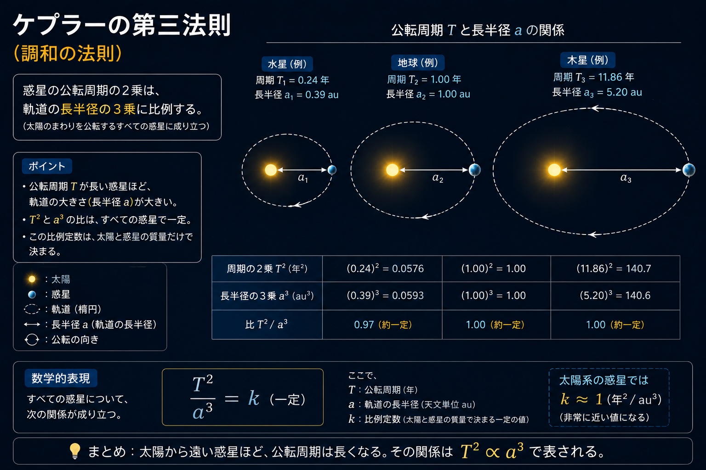

ケプラーの３法則
第一法則「楕円軌道の法則」
惑星は太陽を一つの焦点とする楕円上を運動する。

第二法則「面積速度一定の法則」
惑星と太陽とを結ぶ線分が一定時間に通過する面積は一定である。
面積速度：惑星と太陽を結ぶ線分が単位時間に通過する面積のこと。

第三法則「調和の法則」
惑星の公転周期 $T$ の２乗は、軌道楕円の半長軸（惑星の太陽からの平均距離）$a$の３乗に比例する。
$T^2 = k a^3$ ($k$は比例定数)
